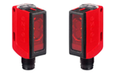
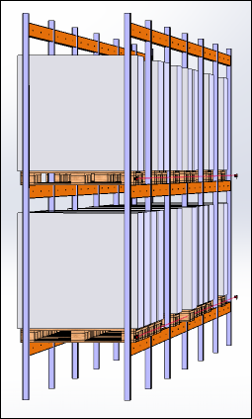

Detección precisa de pallets desplazados en cada nivel de almacenaje. Garantiza la seguridad estructural del rack mediante tecnología High Power, inmune a plásticos sueltos de enfardado.


Detección gálibo rack por cada nivel de almacenaje.
A diferencia de los sensores convencionales, la tecnología High Power está diseñada para **no detectar plásticos sueltos enfardados** o restos de film que cuelgan del palet.
Permite una supervisión individualizada en cada hueco de la estantería, asegurando que la mercancía no invada el pasillo de seguridad del transelevador.
Aumenta el **OEE** de la instalación al eliminar las paradas accidentales por lecturas erróneas de partículas en suspensión o reflejos del embalaje.
25CI
Serie de Sensor
High
Power Tech
IP67
Grado Protección
Fast
Response Time